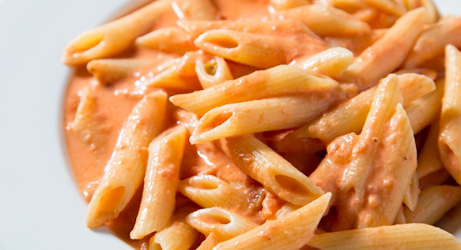

Fideos con salsa rosa

Si bien la salsa mixta es una mezcla de salsa roja y blanca, la salsa rosa es una mezcla de salsa roja y crema. Es muy suave, especial para pastas con rellenos.
Ingredientes
- 2 Cebolla
- 1 Diente ajo
- 1 Puré de tomate
- 1 Crema de leche
- 1 hoja de laurel
Pasos
- Picar la cebolla y el diente de ajo lo mas chiquito posible
- Poner en una sarten con un poquito de aceite de oliva y llevar a fuego mínimo para que se cocine pero sin dorarse.
- Una vez que tengamos eso listo agregar el puré de tomate y dejar cocinar un poco. Agregarle el laurel y los condimentos que mas les guste.
- Cuando el puré de tomate haya tomado consistencia vamos a agregarle la crema y a mezclar.
- Dejar un poquito mas al fuego para que todo tome sabor y listo!
Otras recetas